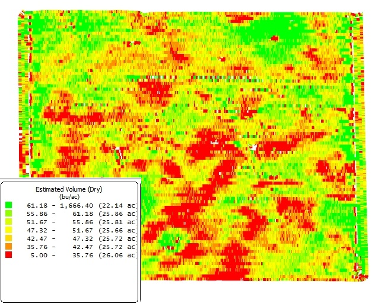

Margens e indicadores
Sobrou, mas sobrou de verdade?
"Deu lucro." Sobrou depois de pagar o quê?
- O boleto do mês?
- O desgaste das máquinas?
- O salário de quem trabalha?
- A alternativa de nem ter plantado?
Cada resposta é uma margem diferente.
Cinco siglas que já conhecemos
Receitas da T2, custos da T4. Hoje elas se encontram.
Três margens, três perguntas
MB: o ano fechou no caixa?
A receita cobriu os desembolsos do ciclo? Nada mais.
- MB negativa: cada hectare piora o caixa. Parar ou reformular já.
- MB positiva: o ciclo se paga. Só isso.
ML: a propriedade se mantém de pé?
Desconta também a depreciação e o pró-labore.
- ML positiva: repõe o patrimônio e paga quem trabalha.
- ML negativa: funciona consumindo patrimônio e trabalho não pago.
A descapitalização não aparece no extrato: aparece na cerca que não se refaz e na máquina que não se troca.
LE: valeu a pena ter produzido?
Desconta o que terra e capital renderiam na melhor alternativa: arrendar e aplicar.
- LE positivo: gera riqueza acima da alternativa.
- LE zero: tudo remunerado, como na alternativa. Não é fracasso.
- LE negativo: arrendar e aplicar renderia mais.
A primeira margem negativa decide
| MB | ML | LE | Diagnóstico | |
|---|---|---|---|---|
| A | +40 | +12 | −8 | Rende menos que arrendar |
| B | −5 | −30 | −50 | Não paga nem o caixa |
| C | +60 | +35 | +10 | Gera riqueza |
| D | +25 | −6 | −30 | Consome patrimônio |
R$ mil por ano. Leia cada linha da esquerda para a direita.
Lucratividade e rentabilidade
R$ 30 mil de lucro é muito ou pouco? Depende da escala.
Quantas sacas pagam a conta?
A soja da T4: 55 sacas por hectare, vendidas a R$ 132,50. Custo ÷ preço da saca:
Por quanto a saca precisa ser vendida?
Custo ÷ 55 sacas = o preço mínimo de cada saca.
Índice de eficiência econômica (IEE) = receita bruta ÷ custo total = 7.287 ÷ 7.000 = 1,04. Cada real de custo volta como R$ 1,04.
Com o que comparar
| Indicador | Referência | Fonte |
|---|---|---|
| Lucratividade | acima de 15–20% | projetos da mesma atividade |
| Rentabilidade | acima da Selic | aplicação sem risco |
| IEE | acima de 1,0 | equilíbrio econômico |
| Nivelamentos | bem abaixo da média | CONAB, EMATER/RS, CEPEA |
A margem também é um mapa
A produtividade varia dentro da lavoura. Então a margem também varia.
- A colhedora mede a produção a cada metro: é o mapa de colheita.
- Com ele, cada zona da lavoura ganha a sua própria conta.

20 hectares, três lavouras
Propriedade leiteira da região central. O milho vira silagem para as vacas.
- Alta: 8 ha, 55 t/ha
- Média: 8 ha, 42 t/ha
- Baixa: 4 ha, 18 t/ha, solo compactado e ácido
Silagem avaliada a R$ 500 por tonelada: o preço de comprá-la pronta.
A média esconde os extremos
| Zona | RL/ha | MB | ML | LE |
|---|---|---|---|---|
| Alta · 55 t | 27.500 | +17.930 | +17.390 | +15.890 |
| Média · 42 t | 21.000 | +11.430 | +10.890 | +9.390 |
| Baixa · 18 t | 9.000 | −570 | −1.110 | −2.610 |
| Média · 42,4 t | 21.200 | +11.630 | +11.090 | +9.590 |
A lavoura lucra bem. A zona baixa perde R$ 2.610/ha todo ano.
Quanto cada zona precisa colher
Alta e média passam as três linhas com folga. A baixa não paga nem o caixa.
Quanto custa a tonelada de silagem
Custo total ÷ produção.
Na zona baixa, cada tonelada custa R$ 145 a mais do que comprar.
Dose fixa ou dose variável?
- Dose fixa: a mesma semente e o mesmo adubo no talhão inteiro.
- Dose variável: guiada pelo mapa, a máquina põe mais onde o solo responde e menos onde não responde.
Na zona baixa, o solo compactado não aproveitaria o insumo extra: cortar a dose quase não tira produção.
A conta da dose variável na zona baixa
Semente e adubo ajustados: o COE cai R$ 1.770, para R$ 7.800/ha. A produção segue em 18 t/ha.
| Zona baixa, R$/ha | Hoje | Dose variável |
|---|---|---|
| COE | 9.570 | 7.800 |
| MB | −570 | +1.200 |
| ML | −1.110 | +660 |
| LE | −2.610 | −840 |
A dose variável salva o caixa e repõe a depreciação, mas não o lucro econômico. Corrigir o solo, virar pastagem ou arrendar: a conta vai para a mesa.
Três lições do caso
- A média esconde os extremos: a lavoura lucra R$ 9,6 mil por hectare, a zona baixa perde R$ 2,6 mil.
- Cada margem responde a uma pergunta: a safra (MB), a permanência (ML), o investimento (LE).
- Agricultura de precisão é decisão econômica: o mapa diz onde investir e onde parar.
Tarefa de saída
O simulador já calculou MB, ML, LE e os indicadores. A tarefa é ler.
- Um parágrafo por margem: valor, sinal e o que significa no seu projeto.
- A decisão que cada margem sustenta: continuar, reestruturar, arrendar.
- Uma comparação externa: rentabilidade × Selic, nivelamento × média regional.
Checklist de saída
- MB, ML e LE do projeto anotados
- Lucratividade, rentabilidade, IEE e nivelamentos lidos
- Interpretação das três margens escrita no passo 6
- Uma comparação externa registrada
Terminou antes? Baixe o preço do passo 1 em 10% e veja qual margem muda de sinal primeiro.
T6: equilíbrio, análise marginal e cenários
As margens são uma fotografia. E quando o quadro se move?
- Quanto a produção pode cair antes do prejuízo?
- A próxima dose de adubo se paga?
- E se o preço despencar?
Para a T6: revisar a Parte III, bloco 1, e trazer as três margens do projeto anotadas.
Fontes e créditos
Referência bibliográfica geral: KAY, Ronald D.; EDWARDS, William M.; DUFFY, Patricia A. Gestão de propriedades rurais. 7. ed. Porto Alegre: AMGH, 2014. E-book. ISBN 9788580553963. Disponível em: Minha Biblioteca. Acesso em: 29 maio 2026. Custos do milho para silagem: Epagri/Cepa, julho de 2026 (COE de R$ 9.570,98/ha e depreciação de R$ 537,73/ha, arredondados; o COT segue a planilha da Epagri, COE mais depreciação). O custo de oportunidade de R$ 1.500/ha, o preço da silagem e as produtividades por zona são premissas didáticas.
Material didático elaborado pelo Prof. Róberson Macedo de Oliveira, Colégio Politécnico da UFSM, com apoio de inteligência artificial (Claude, Anthropic) na organização didática e diagramação. O conteúdo pedagógico, a metodologia e as decisões de planejamento são de responsabilidade do docente.
Material de estudo: Parte III.1: Receita, margens e indicadores · autoavaliação da Parte III · simulador de projetos · versão impressa deste material = apostila da aula (Ctrl+P).